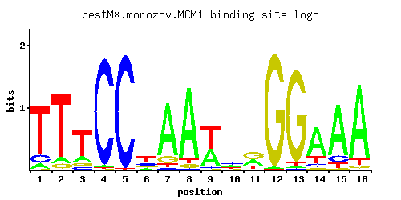

MCM1
YMR043W, FUN80
Transcription factor involved in cell-type-specific transcription and pheromone response; plays a central role in the formation of both repressor and activator complexes
Best-performing DNA-binding model.

View and copy the recommended matrices ↘
A | 0.078 0.079 0.148 0.017 0.001 0.160 0.807 0.875 0.406 0.299 0.356 0.014 0.019 0.691 0.798 0.882 C | 0.126 0.010 0.085 0.969 0.981 0.186 0.040 0.020 0.041 0.342 0.068 0.001 0.013 0.088 0.100 0.008 G | 0.014 0.067 0.092 0.007 0.001 0.169 0.108 0.050 0.025 0.148 0.424 0.981 0.938 0.067 0.023 0.041 T | 0.783 0.844 0.676 0.007 0.017 0.486 0.045 0.055 0.527 0.212 0.152 0.004 0.030 0.154 0.079 0.069
A | 7 7 14 1 0 16 80 87 40 29 35 1 1 69 79 88 C | 12 1 8 96 98 18 4 2 4 34 6 0 1 8 10 0 G | 1 6 9 0 0 16 10 5 2 14 42 98 93 6 2 4 T | 78 84 67 0 1 48 4 5 52 21 15 0 3 15 7 6
A | -1.41 -1.40 -0.77 -2.94 -5.77 -0.69 0.93 1.01 0.24 -0.07 0.11 -3.13 -2.82 0.77 0.91 1.01 C | -0.36 -2.89 -0.75 1.68 1.70 0.03 -1.50 -2.20 -1.48 0.64 -0.97 -5.19 -2.63 -0.72 -0.59 -3.11 G | -2.55 -0.99 -0.67 -3.25 -5.19 -0.06 -0.51 -1.28 -1.97 -0.20 0.86 1.70 1.65 -0.99 -2.06 -1.48 T | 0.89 0.97 0.75 -3.82 -2.94 0.42 -1.96 -1.76 0.50 -0.41 -0.74 -4.38 -2.37 -0.73 -1.40 -1.53
Alternative candidate matrices 14
Historical matrix candidates from the original ScerTF database. Expand a source to inspect its original logo, scores, and matrix values.
MCM1_AFoat et. al.P = 8.92e-48View matrix ↘
MCM1_BFoat et. al.P = 2.30e-23View matrix ↘
MCM1_CFoat et. al.P = 8.73e-56View matrix ↘
MCM1_DFoat et. al.P = 9.34e-63View matrix ↘
MCM1_AFordyce et. al.P = 1.93e-07View matrix ↘
MCM1_BFordyce et. al.P = 7.11e-06View matrix ↘
MCM1_CFordyce et. al.P = 4.79e-13View matrix ↘
MCM1Harbison et. al.P = 9.20e-59View matrix ↘
MCM1Macisaac et. alP = 3.29e-76View matrix ↘
MCM1_APachkov et alP = 1.20e-54View matrix ↘
MCM1_BPachkov et alP = 2.02e-73View matrix ↘
MCM1Zhu J and MQ ZhangP = 3.39e-43View matrix ↘
MCM1Zhu et. al.P = 2.00e-62View matrix ↘
MCM1Zhao and StormoP = 1View matrix ↘
Gene-level annotations and interactions.
Genes bound in ChIP-chip experiments 163 genes
YAL037W, YAL038W, YAL040C, YAR018C, YBL026W, YBL059W, YBL104C, YBR037C, YBR038W, YBR044C, YBR060C, YBR122C, YBR124W, YCR018C-A, YCR019W, YCR024C, YDL044C, YDL134C, YDR042C, YDR146C, YDR147W, YDR148C, YDR150W, YDR179C, YDR179W-A, YDR210W-D, YDR224C, YDR225W, YDR278C, YDR316W-A, YDR316W-B, YDR389W, YDR420W, YDR434W, YDR451C, YDR452W, YDR461W, YDR528W, YEL012W, YEL040W, YEL044W, YEL045C, YEL046C, YER007C-A, YER044C, YER069W, YER071C, YER072W, YER111C, YER112W, YER136W, YER138C, YER159C-A, YER160C, YFL026W, YFL027C, YFL034W, YGL032C, YGL116W, YGL201C, YGL202W, YGR041W, YGR047C, YGR048W, YGR089W, YGR092W, YGR123C, YGR168C, YGR190C, YGR191W, YHR005C, YHR098C, YHR099W, YHR151C, YHR152W, YIL015W, YIL069C, YIL076W, YIL077C, YIL123W, YIL158W, YJL003W, YJL004C, YJL049W, YJL051W, YJL148W, YJL155C, YJL158C, YJL159W, YJL160C, YJL194W, YJL196C, YJR091C, YJR092W, YKL039W, YKL040C, YKL058W, YKL059C, YKL072W, YKL163W, YKL164C, YKR036C, YKR040C, YKR042W, YKR068C, YKR069W, YLR036C, YLR084C, YLR105C, YLR131C, YLR166C, YLR167W, YLR189C, YLR190W, YLR261C, YLR262C, YLR273C, YLR274W, YLR302C, YML052W, YML053C, YML109W, YML110C, YMR144W, YMR231W, YMR253C, YNL053W, YNL056W, YNL058C, YNL145W, YNL289W, YNL298W, YNL331C, YNR028W, YNR044W, YNR054C, YNR062C, YNR063W, YOL011W, YOL012C, YOL066C, YOL115W, YOL117W, YOL118C, YOL151W, YOR066W, YOR108W, YOR236W, YOR315W, YOR354C, YOR360C, YOR388C, YOR389W, YPL044C, YPL275W, YPL276W, YPL277C, YPL278C, YPR007C, YPR109W, YPR112C, YPR113W, YPR119W
Genes affected by TF deletion 854 genes
YBL113C, YBL086C, YBR004C, YBR034C, YBR006W, YBR036C, YCR012W, YCL055W, YCR016W, YDR366C, YDR434W, YER116C, YER145C, YER118C, YER178W, YGL232W, YGL234W, YHL010C, YHL044W, YGR280C, YGR282C, YIL110W, YIL142W, YIL116W, YKR075C, YLR214W, YML112W, YMR043W, YMR014W, YMR045C, YML117W-A, YMR046W-A, YNL018C, YNL050C, YNL085W, YOL012C, YOL043C, YOL013W-A, YOR225W, YPL174C, YPL239W, YPL209C, YPL243W, YKL122C, YMR109W, YAL037W, YBR219C, YBR162C, YDL062W, YDL096C, YDL128W, YDR222W, YEL042W, YGR156W, YHR117W, YHR148W, YJL119C, YKL043W, YKL045W, YKL049C, YLR025W, YLR056W, YLR027C, YLR029C, YLR432W, YLR436C, YMR194W, YMR226C, YNL239W, YNL241C, YNL243W, YOR065W, YOR006C, YOR039W, YPL049C, YPL019C, YPL051W, YPL053C, YPR139C, YCR057C, YDR301W, YPL064C, YBL083C, YBR029C, YBR005W, YCR009C, YCR037C, YCR039C, YCR013C, YDR034C-A, YDR365W-B, YDR429C, YDR399W, YER144C, YGL168W, YGL231C, YGR275W, YHL045W, YHL047C, YIL077C, YIL109C, YJR047C, YJR086W, YMR009W, YML115C, YNL051W, YNL084C, YOL011W, YOL014W, YOL048C, YOR220W, YOR252W, YOR222W, YOR226C, YPL204W, YPL206C, YAL035C-A, YBR220C, YDL125C, YDL063C, YDL095W, YDL129W, YDL067C, YDR187C, YEL011W, YEL015W, YEL076C, YEL017C-A, YFR033C, YGL012W, YGL044C, YGR122C-A, YGR155W, YGR157W, YHR175W, YHR145C, YHR179W, YJL080C, YJL082W, YJL086C, YKL104C, YKL044W, YKL079W, YNL274C, YOR036W, YOR068C, YPL014W, YPL048W, YPL050C, YOR382W, YPR138C, YBR126C, YDR342C, YBR092C, YCR082W, YDR096W, YDR128W, YFL045C, YGR005C, YHR081W, YHR083W, YHR025W, YJL016W, YJL020C, YIR034C, YJR143C, YJR147W, YJR118C, YJR149W, YLR340W, YLR374C, YMR132C, YMR103C, YMR105C, YOL136C, YOL106W, YOR315W, YOR287C, YOR317W, YOR289W, YOR351C, YPR016C, YPR020W, YPR052C, YPL283C, YBR251W, YBR283C, YDR276C, YER053C, YGL103W, YGL137W, YGR184C, YGR248W, YGR250C, YIL016W, YJL151C, YJL183W, YLR126C, YML056C, YML085C, YMR314W, YMR316W, YNR030W, YOR135C, YPL146C, YHR183W, YBR093C, YBR067C, YBR097W, YCR075C, YDR127W, YDR525W, YDR497C, YFR004W, YFL013C, YGR028W, YGR030C, YHR050W, YHR084W, YJL017W, YJL021C, YJR111C, YJR113C, YKL013C, YJR146W, YKL017C, YLL027W, YLL031C, YLR304C, YLR306W, YLR339C, YMR072W, YMR074C, YMR104C, YMR136W, YNL110C, YOL137W, YOL109W, YOR284W, YOR344C, YOR286W, YOR320C, YPL265W, YPR045C, YCL012W, YBR254C, YBR256C, YDR277C, YDR340W, YER023W, YER025W, YER057C, YGL136C, YGR211W, YGR183C, YGR217W, YIL015W, YIL051C, YJL208C, YJL212C, YKL199C, YKL142W, YLR153C, YLR155C, YLR157C, YML053C, YML055W, YML086C, YML028W, YMR251W-A, YNL300W, YNR025C, YNL336W, YPL111W, YER042W, YBR012W-B, YCR046C, YCR021C, YDR074W, YDR442W, YDR412W, YGL209W, YGR284C, YIL088C, YIL122W, YJR030C, YKR049C, YKR020W, YKR053C, YLR257W, YML123C, YNL024C, YOL019W, YOL052C-A, YOL054W, YOR261C, YOR265W, YOR203W, YOR267C, YPL213W, YPL247C, YKL098W, YAR008W, YAL044C, YAR015W, YBR167C, YBR169C, YDL102W, YDR226W, YER002W, YGR130C, YJL063C, YKL051W, YKL084W, YLR066W, YLR068W, YLR438C-A, YML004C, YML006C, YML008C, YMR202W, YOR043W, YOR047C, YOR385W, YBR041W, YCL058C, YCR018C-A, YCR049C, YCL064C, YCR020W-B, YDR011W, YER119C, YER150W, YER152C, YGR283C, YGR285C, YHL021C, YIL123W, YKR052C, YLR221C, YLR225C, YML120C, YML124C, YNR066C, YOL053W, YOR202W, YJR148W, YML100W, YAL040C, YAL012W, YAL042W, YAR007C, YAL043C-A, YBR166C, YDL075W, YER003C, YEL055C, YGL046W, YFR043C, YGR127W, YGR129W, YGR104C, YGR133W, YJL056C, YJL060W, YKL081W, YKL052C, YKL053W, YKL085W, YLR034C, YLR438W, YML005W, YMR195W, YOR076C, YOR078W, YOR388C, YPL028W, YDR343C, YBR070C, YBR106W, YCR084C, YDL041W, YDR171W, YDR502C, YDR533C, YFL018C, YFR015C, YFL022C, YFR017C, YGR038C-B, YGR041W, YHR093W, YHR065C, YIR005W, YIR038C, YKL024C, YLR378C, YLR380W, YMR145C, YOL086C, YOL118C, YOR355W, YPL276W, YPR010C, YBL064C, YBR297W, YDR288W, YDR290W, YGL117W, YHR215W, YIL060W, YKL182W, YLR158C, YLR160C, YLR194C, YLR134W, YML031W, YML062C, YML093W, YMR260C, YMR318C, YMR296C, YNR035C, YPL088W, YPL092W, YPL156C, YFL014W, YJL062W, YBR071W, YBR105C, YCR088W, YDR167W, YDR473C, YGR008C, YHR088W, YHR060W, YIR004W, YIR035C, YJL027C, YJR150C, YLL039C, YLL041C, YLR343W, YLR375W, YLR379W, YLR349W, YMR077C, YMR140W, YMR083W, YNL150W, YOR298C-A, YPL275W, YPR055W, YAR071W, YAR075W, YBL032W, YBR290W, YBR296C, YDR346C, YER031C, YER035W, YER062C, YER037W, YGR251W, YGR189C, YGR221C, YGR253C, YGR257C, YIL053W, YIL057C, YHR216W, YJL188C, YJL158C, YKL210W, YKL150W, YKL214C, YLR193C, YML090W, YML094W, YMR263W, YNL308C, YNR001C, YNR003C, YNR038W, YPL087W, YPL119C, YER060W, YCL067C, YCR059C, YER127W, YER159C, YER133W, YIL162W, YJR032W, YJR064W, YJR096W, YJR070C, YKR024C, YKR059W, YKR093W, YLR259C, YLR295C, YML127W, YNL067W, YOL058W, YOR273C, YPL252C, YPL193W, YIL114C, YKL109W, YAL023C, YAR028W, YAR030C, YBR205W, YBR175W, YBR207W, YDL084W, YDR238C, YEL026W, YGR138C, YGR109W-B, YHR196W, YJL065C, YKL062W, YKL096W, YKL127W, YLR074C, YLR044C, YMR208W, YOR085W, YPL035C, YBR088C, YDR019C, YDR047W, YER126C, YER130C, YHL025W, YHR007C, YGR295C, YIL127C, YIL097W, YKR058W, YLR258W, YLR231C, YLR292C, YLR294C, YML126C, YML128C, YMR058W, YML132W, YMR031C, YNL066W, YOL057W, YOL059W, YOL032W, YOR238W, YPL188W, YPL192C, YJR127C, YAR027W, YAR029W, YBR202W, YBR238C, YDL141W, YDL145C, YGL022W, YGL054C, YFR051C, YGR108W, YGR137W, YGR139W, YHR193C, YKL091C, YNL260C, YPL061W, YPL004C, YBL007C, YBR078W, YCR091W, YDL048C, YCR097W, YDR146C, YDR510W, YFL028C, YFL059W, YFR024C-A, YHR071W, YJL002C, YJL034W, YKL030W, YKL001C, YLL018C-A, YLR326W, YMR120C, YNL197C, YOR335C, YPR004C, YPR136C, YOR383C, YBL070C, YCL038C, YDR292C, YDR322C-A, YDR294C, YER043C, YER070W, YGR196C, YGR198W, YIL066C, YIL036W, YJL193W, YKL186C, YLR136C, YML074C, YMR298W, YMR300C, YMR272C, YBR145W, YDL014W, YCR096C, YDR111C, YDR174W, YDR481C, YDR513W, YFR018C, YFL027C, YFR022W, YFR024C, YGR014W, YGR078C, YGR048W, YGR080W, YIR043C, YIR016W, YJR129C, YKL029C, YJR133W, YLL047W, YLR355C, YLR387C, YLR325C, YMR116C, YMR090W, YMR121C, YNL158W, YNL190W, YNL160W, YNL162W, YOL119C, YOL151W, YOL093W, YOL155C, YPL281C, YPR061C, YPR002C-A, YBL069W, YBL042C, YBR298C, YCL031C, YBR302C, YDL239C, YDR321W, YDR354W, YDR297W, YDR358W, YER066C-A, YER067W, YER098W, YGL154C, YJL164C, YKL183W, YKL156W, YLR201C, YLR203C, YML100W-A, YMR303C, YNR009W, YPL129W, YER091C, YGL192W, YBR054W, YCR034W, YCR069W, YDR056C, YER138C, YHL008C, YHL009W-A, YIL134W, YIL138C, YJR108W, YJR046W, YLR297W, YLR270W, YMR006C, YMR037C, YNL073W, YNL075W, YOL041C, YOL072W, YOR215C, YOR247W, YOR281C, YOR251C, YPL229W, YPL199C, YPL231W, YPL260W, YNL054W, YAL060W, YAL062W, YBR183W, YDR210W-D, YDR270W, YDR212W, YDR244W, YEL034W, YEL065W, YGL031C, YGL037C, YGR146C, YGR176W, YGR119C, YHR141C, YJL141C, YKL131W, YKL135C, YOR089C, YBR055C, YBL107W-A, YBR057C, YCR066W, YCR005C, YCR035C, YDR055W, YDR087C, YDR029W, YDR425W, YDR427W, YER134C, YGL190C, YGL222C, YGL253W, YGL226C-A, YHR015W, YHR019C, YIL165C, YIL105C, YIL107C, YIL171W, YJR103W, YJR105W, YJR043C, YJR045C, YKR100C, YMR062C, YMR005W, YMR007W, YNL104C, YNL043C, YNL076W, YOL003C, YOL065C, YOL038W, YOL009C, YOL071W, YOR212W, YOR250C, YOR282W, YPL196W, YPL228W, YPL230W, YPL259C, YPL202C, YPL263C, YKL009W, YAL058C-A, YAL061W, YBR214W, YDL147W, YDR273W, YGR143W, YGR145W, YGR177C, YHR135C, YHR137W, YJL074C, YJL076W, YJL142C, YKL069W, YKL100C, YKL132C, YLR117C, YML016C, YML018C, YMR181C, YMR243C, YMR215W, YMR217W, YMR250W, YNL264C, YNL234W, YNL266W, YNL268W, YOR056C, YOR058C, YOR092W, YOR094W, YPL012W, YPR103W, YDR152W, YFL037W, YFR001W, YGR087C, YHR046C, YJL012C, YLL024C, YLL026W, YLR334C, YMR158C-B, YNL171C, YOR343C-B, YPR008W, YPR074C, YCL040W, YCL042W, YIL040W, YKL198C, YLR180W, YML076C, YNL327W, YBR084W, YDL059C, YDR121W, YHR047C, YKL040C, YLL019C, YLL021W, YLR022C, YLR327C, YNL166C, YOL101C, YOR306C, YOR342C, YDR299W, YER050C, YER079W, YGR237C, YJL200C, YLR177W, YLR149C, YML109W, YNL007C, YNR017W, YPL107W
Genes supported by both experiments 25 genes
YAL037W, YAL040C, YCR018C-A, YDR146C, YDR210W-D, YDR434W, YER138C, YFL027C, YGR041W, YGR048W, YIL015W, YIL077C, YIL123W, YJL158C, YKL040C, YML053C, YML109W, YOL011W, YOL012C, YOL118C, YOL151W, YOR315W, YOR388C, YPL275W, YPL276W
Predicted TF–TF partners 6 genes
ASH1, FKH1, FKH2, HMRA2, NDD1, SWI6